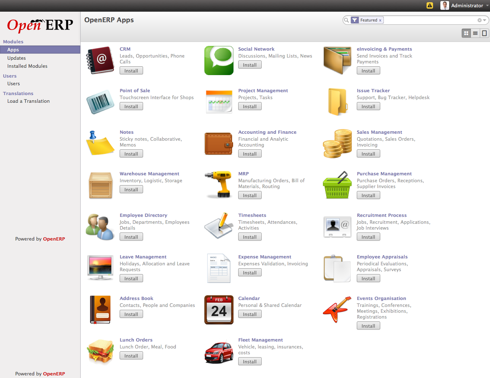

Creating Database in OpenERP¶
After successfully installation of OpenERP in to your local server you can create a first database in to your OpenERP Local instance.

Login Page
Manage Database¶
Goto Manage Databases option from the Login page and enter Master Password, Database Name, Load Demo data, and Choose a Database Password and click on create button to create a Database.

Create Database
On successful database creation you will get the Apps List which allows you to install Application from OpenERP Apps store.
Apps list from OpenERP Apps
You need an active account on OpenERP.com in order to install Apps from OpenERP’s Apps store. You can also working with the Installed modules if you have developed an OpenERP module and like to test it locally.